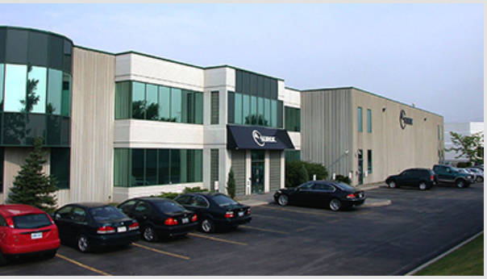

My Resume
AZADEH SAMANI
647-710-6600 | Email: azadeh.saamani@gmail.com
Website: https://azadeh7049.github.io/walnut2
OBJECTIVE
Looking for a challenging role in a reputable organization to utilize my technical, networking and management skills for the growth of the organization as well as to enhance my knowledge about new and emerging trends in the IT sector.
SUMMARY OF QUALIFICATIONS
- Results-driven professional offering a progressive career in information technology as Computer and Network Administrator and Bench Repair Technician
- Repeated success directing IT projects from inception to execution, strategically allocating resources and delegating tasks to achieve on-time, on-budget delivery.
- Expertly manage technical support operations, diligently troubleshooting issues to identify root causes and prevent recurrence.
Areas of Expertise
Testing & Troubleshooting | Network Administration | System Administration
Vendor Relations | Strategic Planning | Resource Allocation | Effective Communication
Team Leadership | Business Continuity | Data Backup & Recovery
TECHNICAL PROFICIENCIES
- Configure security settings or access permissions for group or individuals
- Identify the causes of networking problems, using diagnostic testing software and equipment
- Install network software including firewall software
- Install new hardware or software systems or components, ensuring integration with existing network systems and cabling
EDUCATION & TRAINING
Bachelor’s Degree in Computer Science 2006
Pursuing Web Development program at George Brown College 2020
ADDITIONAL COURSES
Network+ 2009 | A+ 2011 | MCSE 2009 | CCNA 2012
HTML, CSS, Java Script, Angular, Json 2019
PROFESSIONAL EXPERIENCE
Bench Repair Technician, Soroc Technology Inc., TO Dec 2015 – Sep 2018

- Repaired more than 1000 scanners, 100 printers, 200 monitors and TVs, 5 servers and 200 computers<
- Classified and prepared the defective parts for return to the manufacturer and companies
- Followed service-now application to close the devices tickets and made a report for the repaired devices
- Updated and configured more than 200 tablets for Canadian Tire
- Trained new employees to become experts in repairing the devices and closing the related
ticket in ServiceNow
Computer and Network Administrator, Help Desk, Irankhodro Co. Oct 2011 – Mar 2014
- Managed and maintained networking equipment
- Processed network and distributed network connection
- Solved clients’ computer problems by installing, configuring, and administering network technologies and workstations for TCP/IP based LAN
- Installed and configured support of the PC platform, including support for PC hardware,
operating system software, peripherals and related software & hardware
- Cabling
- Re-purposed legacy equipment successfully, due to limited budgets, which saved 60% of the
costs in procurement of company
•- Trained 60 users by creating and conducting 10 training programs. This resulted in a 40%
decrease amount of calls to the help desk which allowed the team to focus on maintenance and
improvements
REFERENCES ARE AVAILABLE UPON REQUEST